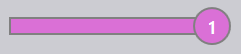

Zobrazenie práce
Táto sekcia vysvetľuje rôzne zobrazenia dostupné v zobrazení práce, vrátane Práce, Diely, Hniezda, Úprava, Simulácia a Export.
Práce
Výberom možnosti zákazky sa zobrazí zoznam všetkých prác aktuálne nastavených v softvéri. Môžete dvakrát kliknúť na prácu, aby ste videli jej podrobnosti, alebo kliknúť pravým tlačidlom na prístup k dodatočným možnostiam.
-
Práce sú zobrazené v zobrazení dlaždíc, kde každá práca je zobrazená so základnými vlastnosťami ako Job ID, Job Ref, meno zákazníka, celkový počet dielov, termín dodania, stavový pruh práce atď.
-
Každá dlaždica práce zobrazuje aj obrázky dielov vo formáte stohu kariet. Môžete prechádzať všetkými dielmi v práci pomocou kolieska myši.

Podrobnosti práce
-
Dvojité kliknutie na dlaždicu alebo stlačenie klávesy Enter po výbere dlaždice prepne zobrazenie do režimu podrobností.
-
Stránka podrobností zobrazuje zoznam dielov spolu s uloženými hárkami (rozvrhnutiami), ak existujú.
-
Použite klávesy šípok hore/dole na prepínanie medzi prácami na stránke podrobností.
-
Posúvanie kolieska myši nad stohu dielov zvýrazní diel v zozname dielov aj v rozvrhnutiach.
-
Výberom rozvrhnutia sa zvýrazní rozvrhnutie a všetky diely uložené na ňom v zozname dielov. Zvýraznenia sa automaticky vypnú po minúte.

-
Sumár rozmiestnenia:
-
Dielce: Zobrazuje celkový počet položiek objednávky a celkové množstvo v práci.
-
tabule plechu: Zobrazuje celkový počet uložených hárkov spolu s celkovým množstvom hárkov.
-
-
Pracovné kroky:
-
Ohýbanie: Zobrazuje priradený stroj a jeho množstvo objednávky na spracovanie.
-
Rezanie: Zobrazuje priradený stroj a jeho množstvo objednávky na spracovanie.
-
Priorita
-
Najprv kliknite na ikonu Jobs na ľavej strane obrazovky, vyberte prácu, ktorú chcete upraviť, a potom kliknite na edit na pravej strane obrazovky (uistite sa, že je vybratá možnosť Jobs).
-
Alternatívne kliknite pravým tlačidlom na vybranú prácu a kliknite na ikonu Uzamknúť dokument pre úpravy.
-
Keď kliknete na edit, zobrazí sa okno úpravy práce. V tomto okne môžete nastaviť alebo zmeniť prioritu pre prácu.

-
Na základe priority dielov práce je Job Reference v dlaždici práce farebne tónovaný zodpovedajúco.
-
Diely práce sú zoradené najprv podľa priority a potom podľa termínu dodania. Sú tiež farebne tónované podľa ich priority.
-
Pri ukladaní sú najprv zvážené diely Urgent, potom High, potom Normal a nakoniec sú diely s prioritou Low umiestnené do zostávajúceho priestoru na hárky hniezda.
-
Hárky hniezd sú tiež zoradené a farebne tónované podľa priority.
| Priorita práce | Popis farby |
|---|---|
|
Urgent |
|
Normal |
|
High |
|
Low |


Stav
-
Stavový pruh práce používa farebné kódy na označenie priebehu alebo stavu práce na základe spracovaného alebo zostávajúceho množstva.
-
Diely v rámci práce a hárky hniezd sú tiež zvýraznené zhodnými farbami, aby odrážali ich individuálny stav v rámci celkovej PRÁCE.
-
Farebné kódovanie zlepšuje sledovanie a zabezpečuje, že operátori môžu jednoducho vidieť stav výroby na prvý pohľad.


| Stav práce | Popis |
|---|---|
|
Nepripravené |
 |
Rozmiestňovanie dielcov |
|
Pripravené |
|
Bend Planned |
|
Chýbajúca tabuľa |
|
Čaká na ohýbanie |
|
Čaká na rezanie |
|
Ukončené |


Diely
Zobrazenie aktívnych dielov zobrazuje všetky diely, ktoré sú aktuálne v procese v rámci aktívnych prác.
Každý diel je reprezentovaný ako dlaždica zobrazujúca kľúčové podrobnosti ako názov dielu, rozmery, materiál, hrúbku, množstvo a termín dodania. Zobrazí sa aj vizuálny náhľad dielu.
Toto zobrazenie pomáha používateľom monitorovať stav spracovania jednotlivých dielov a sledovať ich priebeh naprieč prebiehajúcimi prácami.

Hniezda
Zobrazenie aktívnych hniezd zobrazuje všetky hniezda, ktoré sú aktuálne v procese v rámci aktívnych prác.
Každé hniezdo je reprezentované s relevantnými podrobnosťami ako počet dielov a stav spracovania. Zobrazí sa aj vizuálne rozvrhnutie uložených dielov.
Toto zobrazenie pomáha používateľom monitorovať priebeh ukladania a sledovať, ako sú diely usporiadané a spracované na hárkoch.

Úprava
Možnosť Úprava vám umožňuje upraviť vybratú položku.
Na základe aktuálneho zobrazenia sa vybratá inštancia otvorí na úpravu:
-
V zobrazení Práce sa vybratá práca otvorí na úpravu.
-
V zobrazení Aktívne diely sa vybratý diel otvorí na úpravu.
-
V zobrazení Aktívne hniezda sa vybrané hniezdo otvorí na úpravu.

Export csv
Možnosť Export vám umožňuje vybrať informácie o práci a exportovať ich do CSV súboru.
-
Kliknite na ikonu jobs.
-
Kliknite na možnosť export na pravej strane obrazovky.

-
Zobrazí sa dialógové okno zobrazujúce dostupné polia:

-
Začiarknite políčka pre polia, ktoré chcete exportovať.
-
Použite možnosť Group By, ak chcete zoskupiť údaje podľa vybraného poľa.
-
Kliknutím na Export vygenerujete CSV súbor.
Dodatočné informácie
Na pravej strane obrazovky sú tiež tri dodatočné ikony, ktoré sú simulovať, Goto a späť.
-
Simulate otvorí vybratú položku pre podrobnejšie zobrazenie.
-
Goto prepne zameranie a zobrazenie na diel alebo hniezdo, ktoré je vybraté.
-
Back sa vráti o jednu úroveň späť od miesta, kde sa aktuálne nachádzate, napríklad kliknutím na späť počas simulácie sa vrátite späť na hlavnú prácu a z práce sa vrátite na hlavné zobrazenie prác.